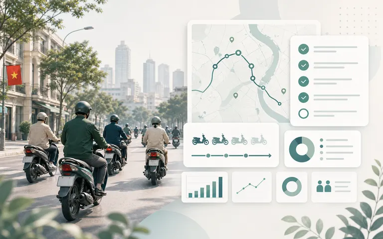
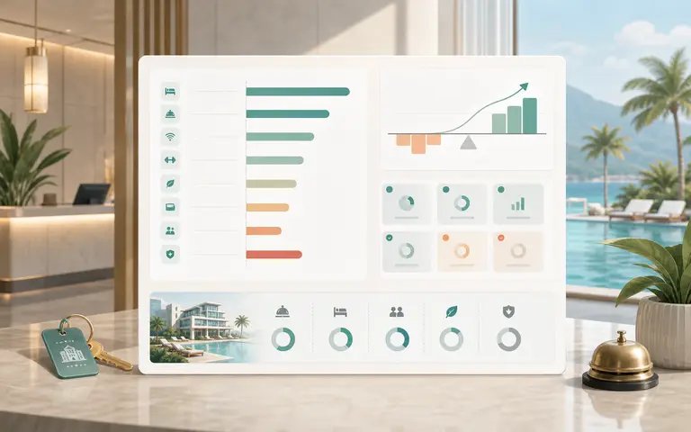
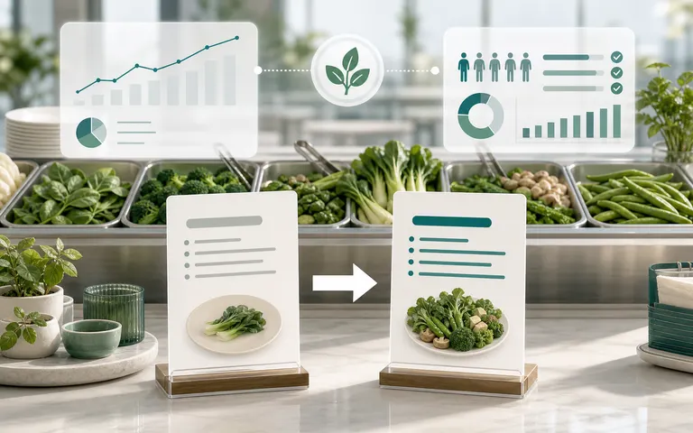
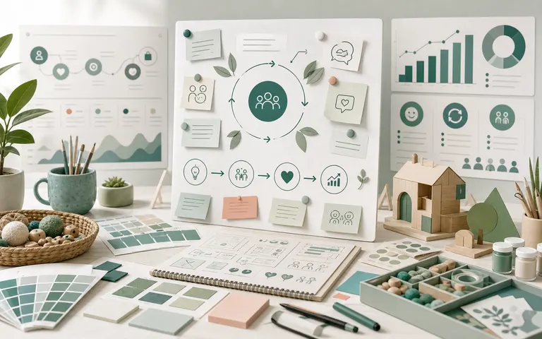

Projects archive
Projects Archive
A curated collection of market research and applied analytics work across hospitality, mobility, creators, health behavior, and organizational decision contexts.
- 100+
- Deliverables
- 11+
- Methods used
- 5
- Domains
Featured Cases
View all featured casesHotel customer segmentation from aspect-level sentiment
Clustered guests across 74,896 reviews.
HospitalityEV consumer preference study
Choices for design, range and pricing.
MobilityHotel value segmentation framework
Turns review text into emotional and social value actions.
HospitalityBrowse by domain
All Projects
Hotel segmentation
Clustered guest groups to personalize experiences.
Hospitality
Motorbike phase-out policy
Consumer acceptance and policy sequencing.
MobilityEV consumer preference study
Choices for design, range, pricing, and charging access.
MobilityStudent diet quality in Vietnam
Cross-sectional survey and regression modeling.
HealthVirtual influencer cues, Gen Z trust
Examines credibility cues and purchase intention.
Creator EconomyInfluencer retention and brand transfer
Links experience quality, engagement, and retention.
Creator Economy
Hotel attribute asymmetry in Vietnam
Largest rating penalties when hotel attributes fail.
HospitalityHotel value segmentation framework
Maps emotional and social value into service actions.
Hospitality
Buffet menu nudging
Tests menu order effects on intake and premium choice.
HealthPsychological Ownership in Vietnam Universities
Translates ownership research into practical action.
Organization
Arts Workshop Co-creation and Customer Interest
Shows how learning, social, and emotional value shape repeat interest.
OrganizationFull documentation, datasets, and code are available.
Each project page includes methods, instruments, results, and replication notes.
- 100+
- Deliverables
- 11+
- Methods used
- 5
- Domains
- Open
- For collaboration